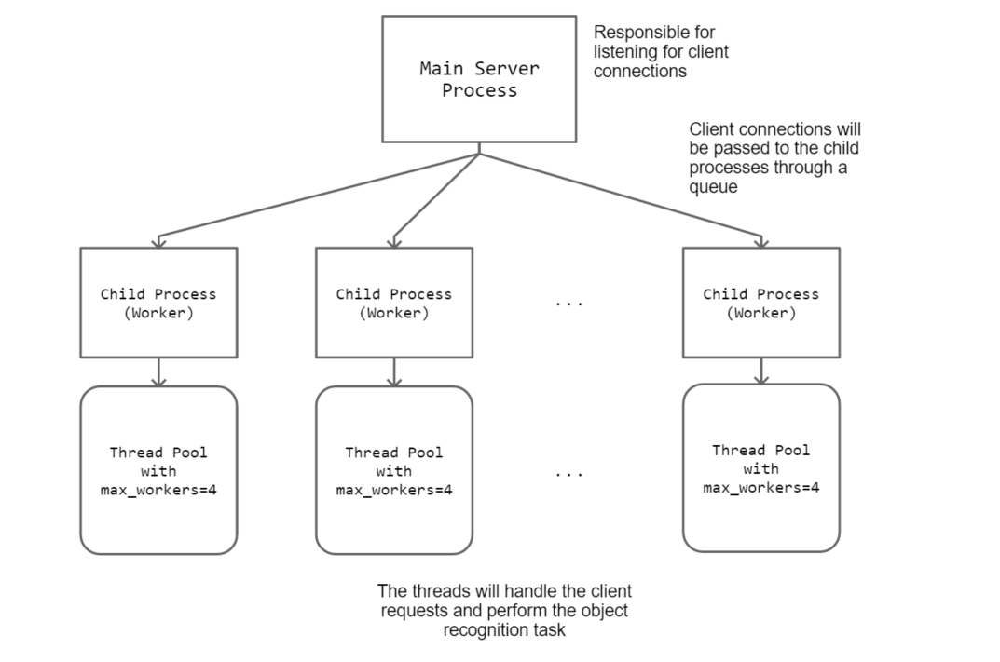
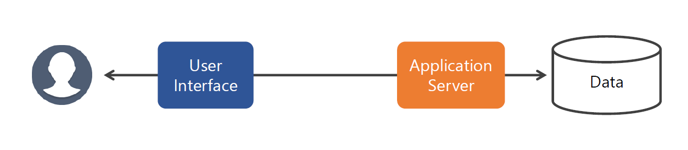
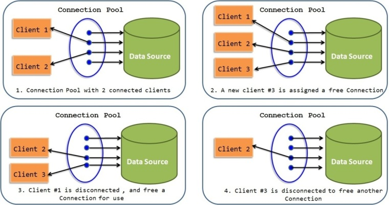
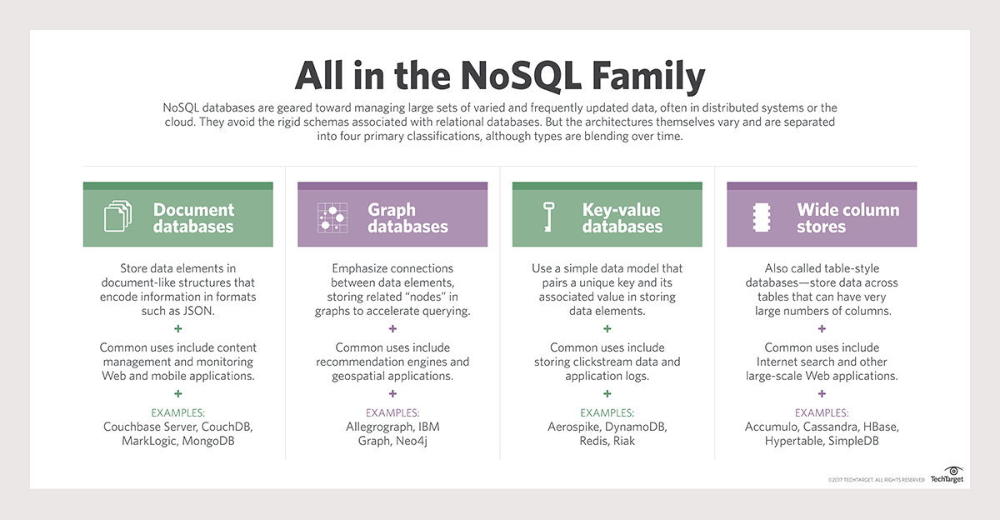

class: center, middle # IEMS 5703<br/>Network Programming and System Design ### Lecture 8 - Databases #### Albert Au Yeung<br/>8th March, 2018 --- class: center, middle # Assignment 2 Review --- # A Pre-fork TCP Server <center>  </center> --- # System Design ### Before you write your program, consider the following: - How to accept client connections and pass sockets to the worker threads? - How to restrict the number of threads in each child process? - Is there any object being shared among the threads? - Do we need to worry about thread safety issues? - ... --- # Child Processes - The main process is responsible for **accepting** connections - **n** processes should be created before any connection has been accepted - Only **n** child processes should be created (Hence, Process pool is NOT an option) - We use a **queue** to pass connected sockets to child processes ```python def process_handle(queue): """ 1. Create tensorflow graph 2. Initialize SqueezeNet Model 3. Create a thread pool with max_workers=4 4. while True: 4.1 get socket from queue 4.2 submit task to thread pool """ ``` --- # Individual Threads - Steps: 1. Receive the **URL** submitted by the client 2. Download the image, and then apply the SqueezeNet model to the image 3. Send predictions to the client - SqueezeNet model should be initialized in the process, and shared by all threads (avoid initialization in each request) ```python def thread_handle(socket, address, tf_graph, model): """ 1. Receive data from client 2. Download image with the given URL 3. Apply the SqueezeNet model to the image 4. Send predictions to the client 5. Shut down and close the connection """ ``` --- class: split # Implementation - Process Handle .column-left[ ```python def process_handle(queue): graph = tf.get_default_graph() model = SqueezeNet() with ThreadPoolExecutor(max_workers=4) as executor: while True: soc, address = queue.get() logging.info("Received " + str(address)) executor.submit(thread_handle, graph, model, soc, address) ``` ] .column-right[ - Get a reference to the default tensorflow graph - Initialize the SqueezeNet model here - Submit the task to the thread pool whenever a new socket is received - NOTE: - **No locks** are required when getting from the queue - We assume putting a **tuple** of (socket, address) into the queue ] --- class: split # Implementation - Client Handle .column-left[ ```python def thread_handle(soc, address, graph, model) thread = threading.current_thread() logging.info("Thread {} starts".format(thread.name)) # Receive the URL from the client data = "" while True: chunk = soc.recv(2048).decode("utf-8") data += chunk if "[END]" in data: break url = data.replace("[END]", "") logging.info("Client submitted URL: {}".format(url)) ... ``` ] .column-right[ - You can get a reference to the curent thread using `threading.current_thread()` - `thread.name` is the name of the thread generated by the interpreter - Receive data until we have the message delimiter `[END]` ] --- class: split # Implementation - Client Handle .column-left[ ```python ... # Download the image m = hashlib.md5() m.update(url.encode("utf-8")) file_name = "images/{}.jpg".format(m.hexdigest()) urllib.request.urlretrieve(url, file_name) logging.info("Image saved to {}".format(file_name)) ... ``` ] .column-right[ - We use the **MD5** algorithm to generate a hash as the file name of the image - You can also use other algorithm, or generate a **UUID**, or a timestamp with a random number - You can use `urllib.request` or `requests` here. In practice, you might want to add some HTTP headers to avoid being blocked by the server hosting the image ] --- class: split # Implementation - Client Handle .column-left[ ```python ... with graph.as_default(): img = image.load_img file_name, target_size=(227, 227)) x = image.img_to_array(img) x = np.expand_dims(x, axis=0) x = preprocess_input(x) preds = model.predict(x) preds = decode_predictions(preds) label = preds[0][0][1] proba = preds[0][0][2] result = (label, proba) result = str(result) logging.info("SqueezeNet result: %s" % result) ... ``` ] .column-right[ - Must use `graph.as_default()` here, because this is the graph in which the model is loaded - Get the top label and its score from the predictions - In practice, if it is not important to save the image to disk, you can directly convert the image downloaded into a `numpy` array, to save some disk I/O time ] --- class: split # Implementation - Client Handle .column-left[ ```python ... soc.sendall(result.encode("utf-8")) soc.shutdown(socket.SHUT_RDWR) soc.close() logging.info("Client connection closed") ... ``` ] .column-right[ - Encode the result string and send it to the client - Call `shutdown(socket.SHUT_RDWR)` to let the other side know immediately that the channel is no longer needed - If you don't call `shutdown()`, there might be a chance that the client does not terminate immediately ] --- # Implementation - Main Process ```python if __name__ == "__main__": # ... Get port number and number of child process from argument # ... Start listening for connection on the chosen port # Spawn child processes queue = multiprocessing.Queue() for i in range(num_proc): p = mp.Process(target=handle_request, args=(queue, )) p.start() logging.info("Created process {}".format(p.name)) # Accept client connections and put them into the queue while True: client_socket, address = server_socket.accept() logging.info("Client {} connected.".format(str(address))) queue.put((client_socket, address)) ``` --- # Alternative Solution - Instead of using a `ThreadPoolExecutor`, we can also create 4 threads in each child process in advance - And then again use a queue to pass received client sockets to these threads - Hence, we will always have the **same 4 threads** within a child process (unlike using `ThreadPoolExecutor` in which new threads will be created) - Sample programs: - Server sample solution: [server_1.py](/lectures/files/a2_server_1.py) - Server alternative solution: [server_2.py](/lectures/files/a2_server_2.py) - Client sample solution: [client.py](/lectures/files/a2_client.py) --- class: split # Handling Many Clients .column-left[ <center> </center> ] .column-right[ - When there are many clients connecting to the server, the server may **NOT be able to handle all** of the requests in time - Depending on the implementation, client sockets may pile up at **different places** - NOTE: all clients should have implemented some **timeouts**. Connection will be closed if server cannot handle a request within a certain period ] --- # Handling Many Clients ### Preparing for many clients to connect 1. In the main process, monitor the number of clients connected, and number of requests **unserved**. Adjust additional child processes dynamically. 2. Be prepared that a client connection may already be **closed** when a thread tries to read from it. 3. Implement **re-try** mechanism on the client side 4. **Test** your server using a large number of concurrent client connections (i.e. load testing) 5. Further **de-couple** the server and the clients by using a **message queue** between them (to be discussed in the next lecture) Ref: [https://en.wikipedia.org/wiki/C10k_problem](https://en.wikipedia.org/wiki/C10k_problem) --- class: middle, center # Databases --- # Databases - **Data** can be considered as the most important assets in many Internet-based services - Consider: - The social network and users’ interests in Facebook - The tweets in Twitter - The search index and cache in Google - ... - Most Internet-based services can be considered as **some means for interacting with some data** <center>  </center> --- # Databases <center> </center> - **Michael Stonebraker**: involved in the invention and development of many relational database concepts (e.g. the object-relational model, query modification, etc.) - Turing Award 2014: [https://amturing.acm.org/award_winners/stonebraker_1172121.cfm](https://amturing.acm.org/award_winners/stonebraker_1172121.cfm) --- class: middle, center # Relational Databases --- # Databases ### Database Management System (DBMS) - A system that stores and manages a (probably large) collection of data - It allows users to perform operations and manage the data collection (e.g. creating a new record, querying existing records) - Examples: - Oracle - MS SQL Server - MySQL - Postgre SQL --- # Relational Database ### Data Model - A **data model** describes how data should be organised - It describes how data elements **relate** to one another - In most cases, a data model reflects how things are related in the **real world** - A widely used data model is the **relational model of data** - A table describes a relation between different objects --- # Relational Databases ### Important Concepts - A **database** is a collection of **relations** (tables) - Each relation has a list of **attributes** (columns) - Each attribute has a **domain** (data type) - Each relation contains a set of **tuples** (rows) - Each tuple has a **value** for each attribute of the relation (or NULL if no value is given) --- # Relational Databases ### Scheme (a.k.a metadata) - Specifies how data is to be structured - Needs to be defined before the database can be populated ### Instance - The actual content to be stored in the database - The structure of the data must conform to the schema defined beforehand --- # Example - Consider a database in which students and courses information are stored - We would have a `student` table: ```sql +-------------------------------------------------------+ | id | name | student_id | date_of_birth | +-----+-----------------+-------------+-----------------+ | 1 | John Chan | 15789890 | 1999-02-25 | +-------------------------------------+-----------------+ | 2 | May Lee | 15674269 | 2000-07-08 | +-------------------------------------+-----------------+ ``` - The schema of the table is:<br/>`(ID integer, name string, year integer, date_of_birth date)` --- # Example - We will also have a `course` table with course information, and a `enrollment` table that indicates which students have enrolled in which course. ```sql +-----+-------------+-------------------------+------------------+ | id | course_code | course_name | lecturer | +-----+-------------+-------------------------+------------------+ | 1 | IEMS 5703 | Network Programming | Albert Au Yeung | +-----+-------------+-------------------------+------------------+ | 2 | IEMS 5718 | Internet Security | K. Y. Hui | ``` ```sql +-----+-----------+------------+ | id | course_id | student_id | +-----+-----------+------------+ | 1 | 1 | 1 | +-----+-----------+------------+ | 2 | 1 | 2 | ``` --- # Relational Database - How can we **create schema** and **modify data** in a database management system? ### SQL – Structured Query Language - A standard language for querying and manipulating data in a relational database - It is both a **<span style="color: #225522">DDL (data definitional language)</span>** and a **<span style="color: #884455">DML (data manipulation language)</span>** - Defining schemas with `CREATE`, `ALTER`, `DELETE` - Manipulating tables with `INSERT`, `UPDATE`, `DELETE` --- class: split # SQL .column-left[ ### Creating a table (schema) ```sql CREATE TABLE Student ( id INT NOT NULL AUTO_INCREMENT, name VARCHAR(100) NOT NULL, student_id INT NOT NULL, date_of_birth DATETIME NOT NULL, PRIMARY KEY (id) ); ``` ] .column-right[ - `INT`, `VARCHAR(100)` are data types of the corresponding fields - `NOT NULL` means that the field must NOT be empty - `AUTO_INCREMENT` means the field is automatically generated, and will increment by 1 when a new record is inserted - `PRIMARY KEY` must be unique ] --- # SQL ### SELECT statement - Used to retrieve data from one or more tables given some conditions ```sql -- Retrieve the date of birth of the student 'John Chan' SELECT date_of_birth FROM students WHERE name = 'John Chan' -- Retrieve the name of the lecturer of course 'IEMS 5722' SELECT lecturer FROM courses WHERE code = 'IEMS 5722' -- Retrieve a list of students whose name is 'John' SELECT * FROM Students WHERE name LIKE ‘John %’; -- Retrieve a list of courses, sort by their course code in descending order SELECT id, code, lecturer FROM courses ORDER BY course_code DESC ``` --- # SQL ### Joining Two Tables - When data are stored in two or more tables, you need to **join** the tables in your query ```sql -- Retrieve a list of students who have enrolled in 'IEMS 5703' SELECT s.student_id, s.name FROM students s, courses c, enrollment e WHERE e.student_id = s.student_id AND e.course_id = c.id AND c.course_code = 'IEMS 5722' ``` - References: - https://en.wikipedia.org/wiki/Join_(SQL) - http://blog.codinghorror.com/a-visual-explanation-of-sql-joins/ --- # SQL ### Inserting New Records ```sql -- Insert a new student into the 'students' table INSERT INTO students (name, student_id, date_of_birth) VALUES ('Paul Wong', 155466772, '2001-08-30'); -- Insert a new course into the 'courses' table INSERT INTO courses (course_code, lecturer) VALUES ('IEMS 5678', 'Prof. Cheung'); ``` --- # SQL ### Deleting Records ```sql -- Deleting a student with a specific student ID DELETE FROM students WHERE student_id = 156472638; -- Deleting a course with a certain course_code DELETE FROM courses WHERE course_code = 'IEMS 5789' ``` ### Updating Records ```sql -- Update the lecturer of a course UPDATE courses SET lecturer = 'T. M. Chan' WHERE course_code = 'IEMS 5432' ``` --- # SQL ### For more complex SQL statements and queries, refer to the tutorials in the following Web sites - MySQL Reference Manual: http://dev.mysql.com/doc/refman/5.7/en/tutorial.html - MySQL Tutorial: http://www.mysqltutorial.org/ - W3School SQL Tutorial: http://www.w3schools.com/sql/ --- # ACID Properties of Relational Databases ### Relational databases focus on having reliable transactions, and usually have the **ACID** properties - **Atomicity** – Each transaction is either “all done” or “failed” - **Consistency** – Data can only be changed according to pre-defined rules - **Isolation** – Concurrent queries do not interfere with one another - **Durability** – Results are persistent in the databases --- # MySQL - An open source relational database management system (now owned by Oracle) - The world's second most widely used RDBMS - Most widely used RDBMS in a client-server model - Website: [http://www.mysql.com/](http://www.mysql.com/) - **Community Edition** – freely available on Windows, Mac OS and Linux - **Enterprise Edition** – More advanced functions with technical support - In Ubuntu, install the MySQL server with ```bash $ sudo apt-get install mysql-server ``` - Ref: [Installing MySQL](https://dev.mysql.com/doc/mysql-getting-started/en/) --- class: equal-split # MySQL - Once installed, you can use its **command line client** to interact MySQL .column-left[ ```mysql $ mysql -uroot -p ... mysql> show databases; +--------------------+ | Database | +--------------------+ | information_schema | | mysql | | performance_schema | | phpmyadmin | +--------------------+ 5 rows in set (0.01 sec) ``` ] .column-right[ ```mysql mysql> create database iems5722; Query OK, 1 row affected (0.03 sec) mysql> use iems5722; Database changed mysql> show tables; Empty set (0.00 sec) ``` ] --- class: middle, center # Interfacing with MySQL in Python --- # Using MySQL in Python - In your server application, it is very likely that you will have to access or modify the data stored in the database - In order to issue queries to the MySQL server, you need to **connect** to the server - MySQL provides an **official library** for connecting to MySQL databases in Python: [Connector/Python](https://dev.mysql.com/doc/connector-python/en/) - Installation (in Ubuntu): ```bash $ sudo apt-get install python3-mysql.connector ``` - For more installation instructions, refer to:<br/>[https://dev.mysql.com/doc/connector-python/en/connector-python-installation.html](https://dev.mysql.com/doc/connector-python/en/connector-python-installation.html) --- # Using MySQL in Python - Create a connection to a MySQL Database ```python import mysql.connector conn = mysql.connector.connect(user='user', password='password', host='localhost', database='db_name') # Issue queries to the database ... conn.close() ``` --- # Handling Connection Errors ```python import mysql.connector from mysql.connector import errorcode try: conn = mysql.connector.connect(...) except mysql.connector.Error as err: if err.errno == errorcode.ER_ACCESS_DENIED_ERROR: # User name or password is incorrect elif err.errno == errorcode.ER_BAD_DB_ERROR: # Database does not exist else: # Other errors ``` --- # Connection Configuration ```python import mysql.connector # Create a dictionary with the configurations config = { 'user': 'user', 'password': 'password', 'host': 'localhost', 'database': 'db_name', } # Connect to the server using the dictionary as config conn = mysql.connector.connect(**config) ``` --- # Executing Queries - To execute an SQL query, you will need to obtain a **cursor** from the connection, and use the cursor to execute the query ```python conn = mysql.connector.connect(**config) cursor = conn.cursor() # Execute a query query = "SELECT student_id, first_name, last_name FROM student" cursor.execute(query) # Retrieve the data from the cursor for student_id, first_name, last_name in cursor: print("{}: {} {}".format(student_id, first_name, last_name)) ``` --- # Using Variables with Queries ### Parameter substitution - Very often you have values stored in Python variables, and would like to use them in the SQL queries - You may want to construct a query **dynamically**. You can use `%s` as a placeholder in the query. - For example: ```python # Use %s as a placeholder in the query student_id = 15623239 query = "SELECT last_name FROM student WHERE student_id = %s" # Provides a tuple of variables for replacing the placeholders cursor.execute(query, (student_id,)) ... ``` - NOTE: there should be NO quotation marks around `%s` --- # Executing Multiple Queries - It is also possible that sometimes you would like to execute **multiple** similar queries - For example, insert a list of students into the `students` table ```python cursor = conn.cursor() query = "INSERT INTO students (student_id, first_name, last_name) VALUES (%s, %s, %s)" students = [ (15647282, "Peter", "Cheung"), (15898998, "Jenny", "Wong") ] cursor.executemany(query, students) conn.commit() # no changes will be made to the DB without commit() cursor.close() # always close the cursor after use ``` - **NOTE**: you must call `commit()` on the connection for the changes to take effect --- # Using a Connection Pool - Establishing a connection to the MySQL server is an expensive process (cost both network and computing resources) - (Check out [https://dev.mysql.com/doc/internals/en/client-server-protocol.html](https://dev.mysql.com/doc/internals/en/client-server-protocol.html) if you are curious) - If you application needs to connect to the MySQL server to execute queries frequently, a lot of resources will be wasted on establishing the connection - In that case, you should use a **connection pool** - Ref: https://dev.mysql.com/doc/connector-python/en/connector-python-connection-pooling.html --- # MySQL Connection Pool - A connection pool opens **a maximum number of connections** between the client and the server - A connection that is no longer needed by one process can be **reused** by another process, without having to establish the connection channel again. - The size of a connection pool is configurable at **pool creation time**. <center>  <br/>(source: http://javainsimpleway.com/connection-pool-overview/) </center> --- # Using a Connection Pool - Create a connection pool in Python - You should specify a **pool name**, and also a **pool size** ```python from mysql.connector.pooling import MySQLConnectionPool config = { 'user': 'user', 'password': 'password', 'host': 'localhost', 'database': 'db_name', } conn_pool = MySQLConnectionPool(pool_name="main_pool", pool_size=5, **config) ``` --- # Using a Connection Pool - Once you have a connection pool, you can get an available connection from the pool - A new connection will be established to the server if - All established connection is in use - Number of active connection is less than `pool_size` - If an existing connection is available, it will be returned ```python conn = conn_pool.get_connection() cursor = conn.cursor() # Execute queries ... cursor.close() conn.close() # Note that the connection is NOT really closed, it will just be returned to the pool ``` --- # Using a Connection Pool - If all connections are being used, and the number of active connections has reached `pool_size`, invoking `get_connection()` will result in an exception `PoolError` - In that case, it means your program is trying to connect to the server too frequently, you can: - Increase `pool_size` - Re-design your program such that it does not need a new connection that frequently ```python try: conn = conn_pool.get_connection() except PoolError as ex: print("No connection is available") ... ``` --- class: center, middle # NoSQL Databases --- # NoSQL Databases ### The relational model of data and relational databases are powerful tools for managing data, but they cannot solve all problems - **Data Model** - data may be better modelled as objects in a hierarchy or a grap - **Schema** - in many applications, it can be too restrictive to have fixed schema - **Scalability** - it takes a lot of effort to horizontally scale relational databases (think about the ACID properties of relational database) - Alternative solutions are therefore desirable for solving new problems --- # NoSQL Databases - **NoSQL (non-SQL, non-relational, not-only-SQL)** systems are storage systems that offer users the ability to model data in ways other than relational tables. - It is NOT a single technology - No single definition of a NoSQL database - Different systems for solving different problems --- # Need for NoSQL Databases 1. **Popularity of Web applications and services** - Many writes and reads because of user participation (user-generated content) - Complex functions require flexibility in data models - Horizontal scaling is desirable<br/><br/> 2. **Flexibility in data schema is required** - Relational database requires data schema to be well-defined - In many applications there can be a lot of attributes and these attributes may change over time<br/><br/> 3. **Different solutions required to handle different types of data** - Structured vs. semi/unstructured data - Data that needs to be served real-time vs. log data --- # NoSQL Databases ### Common features of NoSQL database systems - **DO NOT** require the definition of a fixed schema - Scale **horizontally** (distributed operations, replication and partition) over multiple servers - Simple or no query language, offer **APIs** for manipulating the data - A **weaker** concurrency model (not ACID) - Distributed storage --- # NoSQL Databases <center> <br/> Source: http://searchdatamanagement.techtarget.com/definition/NoSQL-Not-Only-SQL </center> --- class: middle, center # Redis --- # Redis - [http://redis.io/topics/introduction](http://redis.io/topics/introduction) - An open source **in-memory** data structure store - Can be used as a **key-value database**, **cache**, or **message broker** (more on this in the next lecture) - Install redis in Ubuntu with the following command ```bash $ sudo apt-get install redis-server ``` - You can check if the server has been installed successfully by running the redis command line tool: ```bash $ redis-cli 127.0.0.1:6379> ``` --- # Using Redis in Python - You can easily interface with Redis in Python - Install the Python redis module with the following command: ```bash $ sudo pip install redis ``` - Check whether the installation is successful: ```python $ python3 >>> import redis ``` --- # Example - Install the Python `redis` module using `pip` ```python # import redis from redis import StrictRedis # StrictRedis offers API official Redis commands # Establish a connection to redis on localhost r = StrictRedis('localhost') # Set the value of a key r.set(‘test_key’, ‘test_value’) # Get the value of a key # value will be None if no such key is found in redis value = r.get(‘test_key’) ``` --- # Example - You can store strings, lists, sets, or even bit arrays in Redis - It also supports counters (increment or decrement the value) ```python # Create a counter, initialise it r.set('counter', 1) # Increment the counter r.incr('counter') ... # Push a string into a list r.rpush('user_list', 'John Chan') ... ``` - References: [http://redis.io/topics/data-types-intro](http://redis.io/topics/data-types-intro) --- # To Be Continued - We will introduce [MongoDB](https://www.mongodb.com/) in the next lecture --- class: center, middle # End of Lecture 8